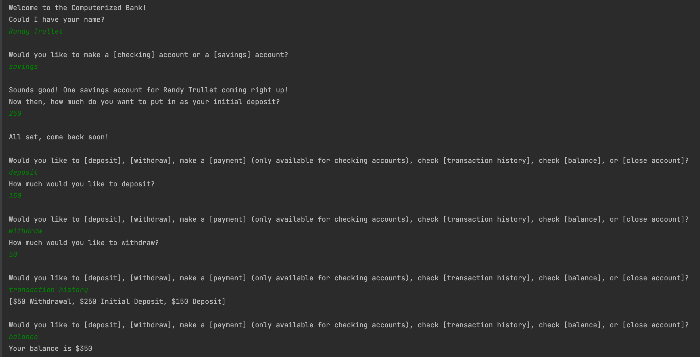
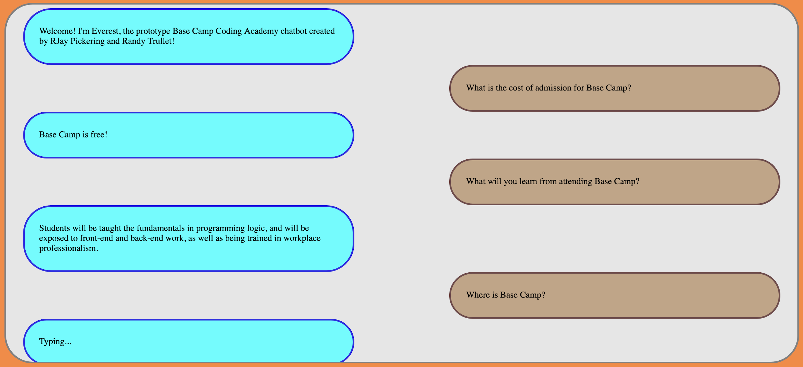

“Amateurs only study successful projects, professionals study failures.” ― Larrie D. Ferreiro

Argentinet
Created With: Django || HTML || CSS
Argentinet is a social media platform centered on the country of Argentina, and allows users to sign up and log in, as well as utilizing class based views to allow signed in users to create and delete their own posts. This project is still in progress, though the base functionality has been completed.
Source Code

Computerized Banker
Created With: Java
My current project, the Computerized Banker is my experimental tool in learning Java, as I often implement ideas after learning of them. In its current state, CB is able to create a checking or savings account and allows users to deposit and withdraw a fictional balance, all while updating a transaction history.
Source Code

Everest: BCCA's Chatbot
Created With: HTML || CSS || JavaScript
Created alongside RJay Pickering, Everest is a chatbot modeled around Base Camp Coding Academy's frequently asked questions and was an excellent eye opener for viewing projects through a user's experience. In this particular program, manipulation of the Document Object Model was key.
Source Code

The Decimation
Created With: Python
This program was created alongside Will Collins. A text based project inspired by the game "60 Seconds!", The Decimation is split into two different phases. During the first phase, the player must gather resources and enter a bunker in a set number of moves. The second phase involves exploration and resource management.
Source Code

Librarian's Catalogue
Created With: Python
The Librarian's Catalogue allows users to store information of any book. Users are able to delete and update books, can check either all of them, check by title, author, or genre. The Catalogue features persistant storage, ensuring that any book that has previously been placed within the program stays saved.
Source Code

Fictional Charity
Created With: HTML || CSS
A ficticious charity page created during our second week of HTML, this website features my first application with multiple pages, as well as my first attempt at a navigation bar. This 'charity' in particular was chosen due to my position within Base Camp Coding Academy's Documentation Team.
Source Code